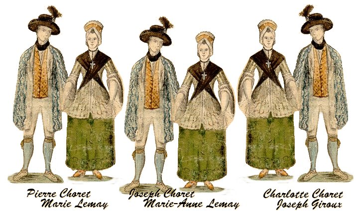
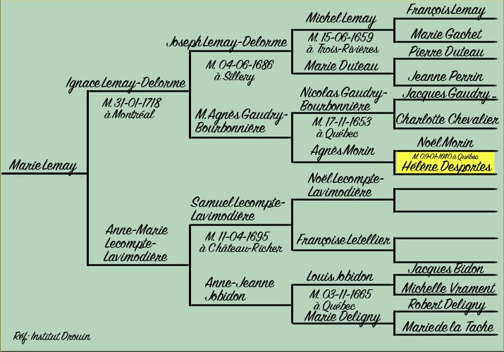
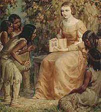
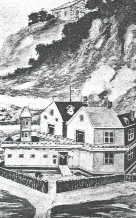
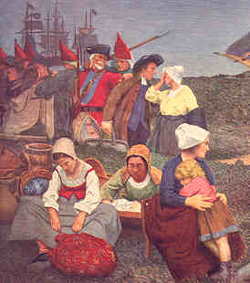

|
|
|
|
Pierre
Choret naît le 13 septembre 1716 à Charlesbourg, au nord de la
Seigneurie Notre-Dame-des-Anges, celle où son arrière grand-père,
Mathieu Choret, avait reçu une terre des Jésuites en 1647.
Environ
un an après la naissance de Pierre, ses parents migrent vers l'île de Montréal,
ils habitent la "coste St-Michel". Son frère Joseph y naît le 26
septembre 1719 et est baptisé dans la paroisse
Notre-Dame. On lui donne les
prénoms de Joseph François, son parrain est François Poirier, marchand,
et sa marraine Marie Joseph Fayer, épouse de monsieur Lestage,
marchand.
La "Coste
St-Michel" est au
nord de l'île, elle est rattachée à la paroisse de Saint-Laurent en 1720,
puis à celle de Sault-au-Récollet en 1736. La famille Choret vit avec
plusieurs Turcot, parents d'Angélique. Il y a aussi comme voisins et amis
des Papineau, Martineau, Rose, Dagenais, Pigeon, etc... et aussi, le
couple Ignace Lemay et Anne Lecompte.
Pour
connaître l'histoire du Sault-au-Récollet et les endroits encore
intéressants à visiter.
Les
deux frères grandissent donc près de la Rivière-des-Prairies. Ils
achètent des terres aux alentours. Joseph Choret, le 11 juin 1739 devant
le notaire C-F Coron, obtient une concession de terre à la Rivière Ste-Marie,
Seigneurie de Terrebonne, par Louis Lepage, prêtre et Seigneur de Terrebonne.
Et
quand vient le temps de choisir une épouse, ils fréquentent deux sœurs,
les filles d'Ignace, qu'ils connaissent depuis l'enfance......

|
|
|

|
|
Le 8
janvier 1742, on célèbre trois noces chez les Choret, on peut donc
imaginer que l'on fait une grande fête, et ce durant plusieurs jours, comme
le veut la tradition du temps. Pierre et Angélique marient leurs deux fils, ainsi qu'une de
leurs filles. Les deux frères épousent deux sœurs Lemay et leur
sœur Charlotte épouse Joseph Giroux. Elle se remariera en 1746
à Guillaume Valade, et en 1764 à Pierre Chartran. Tous ces
mariages ont lieu au Sault-au-Récollet.  Joseph
et Pierre ont une belle descendance. Ils vivent beaucoup
par apparenté. Joseph
et Pierre ont une belle descendance. Ils vivent beaucoup
par apparenté.
Dans les données généalogiques on trouve des
gens, originaires de la Côte Saint-Ange ou de la Petite Auvergne (soit
des bourgades de la Seigneurie Notre-Dame-des-Anges, près de Beauport,
d'où viennent aussi les Choret), qui décèdent au Sault-au-Récollet ou à St-Laurent
sur l'île de Montréal. Ils y ont suivi leurs enfants ou sont
venus s'y installer vers 1720, comme beaucoup d'autres, attirés par
l'essor économique de Montréal.
Nous
savons qu'en 1743 Joseph habite la Côte St-Michel, et, qu'en 1781, il
possède une terre de 3 par 20 arpents tout en désert avec maison,
grange et étable à la Côte de LaVisitation et, à la Côte St-Michel,
une terre en bois debout de 5 par 20 arpents. Par
les actes de baptême de deux des enfants de Pierre, nous savons que ce
dernier, en 1745, était "absent en guerre" et, en
1750, était "absent dans les Pays d'en Haut".
Le
2 octobre 1755, Pierre meurt au Sault-au-Récollet
à l'âge de 39 ans. 1755 est surnommée "l'année
de la grande picote": une nouvelle épidémie de petite vérole,
peut-être rapportée par les troupes revenues de Carillon, ravage la
colonie. Est-ce la cause du décès de Pierre?
Joseph est sûrement là pour aider sa belle-sœur et ses jeunes neveux
et nièces. Ce jour d'octobre est sans doute gravé à jamais dans sa mémoire, non seulement il y perd son unique frère, mais, le même jour, c'est la naissance d'une de ses
filles, Marie-Angélique.
Dans
la nuit du 22 au 23 novembre de la même année, il y a un tremblement de terre en Nouvelle-France, l'avenir s'annonce
difficile avec la guerre à l'horizon, sans compter les famines et les
épidémies.
Mais Joseph traverse ces
évènements et mène une longue vie qui semble
prospère, il décède le 29 août 1792, toujours au Sault-au-Récollet,
il est inhumé le 30 août. Sa veuve, Marie-Anne Lemay, décède le 7
mai 1807 à Saint-Eustache, elle y est inhumée le 9 mai. 
|
|
|
|
|
Le
premier ancêtre Lemay en Nouvelle-France est Michel Lemay. Né en
1630 à Chesnehutte, près d'Angers en France, il épouse le 15 juin 1659
à Trois-Rivières, dans le bourg de la Madeleine, Marie Duteau, née le
21 août 1639 à La Rochelle, France. Les deux époux s'installent
dans la Seigneurie de Lotbinière. Marie décède à Ste-Croix le 29
novembre 1675 et Michel, en 1684, à Lotbinière. Plus tard, des
Lemay vont migrer vers Montréal, plus précisément dans la région du
Sault-au-Récollet, et plusieurs vont faire alliance avec des Choret, et
ce sur plus d'une génération
Quant
à Marie Lemay, l'épouse de Pierre Choret , ses enfants la prénomment aussi "Catherine".
Après la
mort de Pierre en 1755, elle se remarie avec Charles Cadot, et a d’autres
enfants. Un de ces enfants, Michel Cadot, émigre aux Etats-Unis où il fait la
traite des fourrures en haut de Chippewa Falls en 1791 et s’installe
plus tard à LaPointe, au Wisconsin. Il
perd un bras à la guerre de 1812. Son
demi-frère, Pierre Choret, se retrouve à Saint-Louis Missouri.
Donc, certains parents de nos ancêtres émigrent aux États-Unis
dès la fin du 18ème siècle.
|
TABLEAU DES ASCENDANTS
DE MARIE ANNE LEMAY, ÉPOUSE JOSEPH CHORET

VERSION
IMPRIMABLE (EN MODE PAYSAGE)
|
|

Par
Marie Anne Lemay nous descendons d’une aïeule qui occupe une place unique dans l’histoire de la colonie, Hélène Desportes.
 Hélène
Desportes est le premier bébé, de colons européens, à naître vif en
Nouvelle-France.
Ses parents, Pierre Desportes et Françoise Langlois,
originaires de Normandie, arrivent à Québec en 1619. Hélène y naît le
7 juillet 1620. Son parrain est Samuel de Champlain, sa marraine
Hélène Boullé, son épouse.
Hélène Desportes
est la nièce d'Abraham Martin, qui donnera son prénom au grand jardin des
hauteurs de Québec et à la côte qui relie la haute ville et la basse ville.
En
1629 les frères Kirke s’emparent de Québec au nom de l’Angleterre. Les deux derniers hivers avaient épuisé les colons, la famine y avait sévi,
les bateaux venant de France pour le réapprovisionnement de la colonie
ayant été interceptés par les Anglais qui étaient en guerre avec la France. Seuls quelques interprètes, ainsi que la veuve et les enfants de Louis
Hébert, ne quittent pas le pays, maintenant sous autorité anglaise.
Champlain
s’embarque le 24 juillet 1629 avec la plupart des colons, dont les Desportes. Ils voyagent sur les trois navires anglais des Kirke en tant que
prisonniers de guerre. Ils font une longue escale à Tadoussac, puis
arrivent à Plymouth le 20 octobre. Apprenant que la capitulation de
Québec a eu lieu en temps de paix, les deux nations n'étant plus en guerre,
les Kirke relâchent leurs prisonniers et les Français peuvent rentrer en
France par Douvres le 27 octobre.
|
|

|
Trois
ans plus tard, par le traité de St-Germain-en-Laye, la
colonie d’Amérique du Nord est restituée à la
France. Champlain y revient en 1633 pour relancer la
colonie.
Hélène
Desportes revient en 1634 dans son pays natal. Son père serait mort
durant leur séjour en France, qui l'accompagne lors du voyage du retour? Est-elle revenue sur l'un des quatre navires affrétés
par la Compagnie de la Nouvelle-France pour transporter le
chirurgien Robert Giffard et les colons qu'il a engagés
pour développer sa Seigneurie de Beauport? Parmi
eux se trouvent Zacharie Cloutier et Jean Guyon du
Buisson, deux autres de nos ancêtres.
|
| Le
1 octobre 1634 Hélène épouse Guillaume Hébert, fils de
Louis Hébert et de Marie Rollet, le premier colon et la
première institutrice de Nouvelle-France, mais aussi la
première Française à avoir foulé le sol de Québec en
1617.
Louis
Hébert, né à Paris en 1575, près du Louvre, est
apothicaire. Il participe aux tentatives
d'établissement en Acadie, puis accompagne Champlain dans
son aventure à Québec. Malgré beaucoup de
difficultés et d'embûches, il défriche et sème ses terres, plante des
pommiers, élève des bovins. Son idéal est de
vivre avec sa famille dans une relative indépendance,
entretenir de bonnes relations avec les Amérindiens avec
lesquels il étudie la flore du pays, et soutenir ses
compatriotes dans le besoin. Louis Hébert décède
en janvier 1627.
Son fils Guillaume,
lorsqu'il épouse Hélène Desportes en 1634, est donc
propriétaire, par héritage, de la moitié des fiefs paternels, soit environ 500 arpents situés en haut de
la falaise, au-dessus de l'actuelle Place Royale.
Les
terres reconnues en 1623 à Louis Hébert, terres qu'il
avait occupées et défrichées à la main depuis son
arrivée, correspondent aujourd'hui à l'emplacement de la
basilique, du séminaire ainsi que des rues Hébert et
Couillard.
|

Maison de Louis Hébert en haut de la
falaise,
l'Habitation construite par Champlain sous le cap. |
|
Hélène
Desportes et Guillaume Hébert ont 3 enfants :
- Joseph,
baptisé le 3 novembre 1636 à Québec, il épouse Marie-Charlotte de
Poitiers Buisson en 1660. En juin 1661 il est tué à l’Île d’Orléans
par des Iroquois ivres qui l’avaient fait prisonnier lors d'un raid..
- Françoise,
baptisée le 23 janvier 1638 à Québec. Elle épouse en 1651
Guillaume Fournier.
- Angélique,
baptisée le 2 août 1639 à Québec. Destin inconnu.
Guillaume
Hébert décède le 23 septembre 1639.

Hélène
se remarie le 9 janvier 1640 à Québec avec Noël Morin, 39 ans, fils de Claude
Morin et de Jeanne Moreau de Saint-Étienne-de-Brie-Comte-Robert,
Seine-et-Marne.
Ils
ont douze enfants, dont notre aïeule, leur fille aînée Agnès, née le 21
janvier 1641 à Québec. Agnès épouse d’abord, en 1653, Nicolas Gaudry
dit Bourbonnière, 32 ans. Puis elle épouse en secondes noces Ignace
Bonhomme dit Beaupré.
En 1653, Noël
Morin devient propriétaire d'une partie de la
seigneurie de la Rivière-du-Sud, à Montmagny. Cela
comprend l'île aux Oies, notamment. Malgré cette
acquisition qu'il morcellera au profit de ses enfants, le
nouveau seigneur fera de sa propriété de Québec sa résidence
principale. À partir de 1664, il administre les biens de
Marguerite Langlois, la veuve d'Abraham Martin, et de ses
héritiers. C'est ainsi qu'il vend aux Ursulines 39
arpents de la terre d'Abraham. Ce sont les Plaines
actuelles, en partie. Le prix de la transaction : 1200
livres. Une fortune en argent d'aujourd'hui.
Hélène
Desportes et Noël Morin, leurs enfants et leurs familles, habitent, selon
les recensements de 1667 et 1668, la côte St-Jean, la
côte Ste-Geneviève ou la côte St-François, donc au cœur
de la haute ville de Québec.
Là où se trouve toutes les institutions,
l’Hôtel-Dieu, le Séminaire, la basilique, le Fort
St-Louis... Certains de ces établissements sont
bâtis sur des terres cédées ou vendues par Guillemette
Hébert, fille de Louis, et son époux Guillaume Couillard
(le premier colon à se servir d'une charrue). Par
exemple, en 1666 Guillemette, veuve depuis trois
ans, vend à Mgr de Laval le terrain nécessaire pour la
construction du petit séminaire. De nos jours
l'emplacement de la maison Hébert-Couillard est indiqué
par un cairn dans une cour intérieure du
séminaire.
|
|

|
Hélène
Desportes exerce le métier de sage-femme pendant dix ans et transmet ses
connaissances à deux de ses filles, Françoise Hébert et Louise Morin, et à
trois de ses petites-filles.
C’est
un métier essentiel dans la colonie, la sage-femme est choisie par les
autres femmes pour ses connaissances, son expérience personnelle et la
confiance qu’elle inspire aux futures mères.
Hélène
décède le 24 juin 1675 à Québec. Noël Morin
décède le 10 février 1680 à
Montmagny, ses funérailles sont célébrées à Québec cinq jours plus tard..
|
|
|
|
|

1716 - 1755
En
1716, année de la naissance de Pierre, les dirigeants de la
colonie entreprennent des travaux de fortification à Montréal
et à Québec. Ils craignent d`être à nouveau attaqués
par les Anglais. À Montréal, on décide d`entourer la
ville d`un mur de pierre flanqué de bastions sur le site
appelé Faubourg-Québec. Lorsqu'en
1713, la deuxième guerre intercoloniale (la guerre de
succession d'Espagne débutée en 1701) prend fin, les
belligérants d'Europe signent le traité d'Utrecht. Encore une fois, les enjeux se décident en Europe, et cette
fois, le roi de France préfère laisser quelques parties de la
Nouvelle-France à l'Angleterre, en échange d'avantages en
Europe. C'est un véritable désastre pour la colonie.
Avec ce traité, la Nouvelle-France perd l'Acadie, Terre-Neuve
et la Baie d'Hudson, c'est-à-dire
5 000 colons acadiens, de
bons territoires de pêche et le plus gros réservoir
de fourrures.
La Nouvelle-France est réduite à un long corridor sur les
rives du Saint-Laurent,
l'entrée du golfe est menacée, les communications
risquent d'être coupées.
Avec
une population d'à peine 18 000 personnes, la
colonie est dans un piètre état. Heureusement elle
connaît la paix pendant 30 ans, jusqu'en 1744. Les
administrateurs Bégon, Dupuy et Hocquart se succèdent, la
colonie se développe et cherche à exploiter de nouvelles
richesses naturelles, dont les mines. On tente, entre
autres, d'exploiter une ardoisière au Lac Champlain, dans le
but de remplacer le bardeau dont on se sert pour faire les toits
par de l'ardoise, moins inflammable.
Dans plusieurs domaines, on tente de produire des objets de
première nécessité pour ne plus dépendre de
l'importation. Mais ces tentatives sont souvent vaines ou
semées d'embûches, faute de main-d'œuvre qualifiée, de
manque de subventions gouvernementales ou de mauvaise
administration. Preuve qu'il n'y a rien de nouveau sous le
soleil depuis des siècles !
 En
1718, toujours dans cet effort de fortification, on débute la
construction de la forteresse de Louisbourg, dans l'île du Cap-Breton,
pour maintenir une position à l'entrée du fleuve. En
1718, toujours dans cet effort de fortification, on débute la
construction de la forteresse de Louisbourg, dans l'île du Cap-Breton,
pour maintenir une position à l'entrée du fleuve.
Durant les années suivantes on
construit aussi de nombreux forts stratégiques, sur le Richelieu, et dans
la région des Grands-Lacs.
En
1721, la population de la colonie est de 24 951 habitants. Le 19 juin, à Montréal, à l`occasion de la Fête-Dieu un
arquebusier fait feu sur le toit de la chapelle de l`Hôtel-Dieu:
171 maisons brûlent. Les incendies demeurent en
Nouvelle-France une menace omniprésente.
En
1735, de Québec à Montréal, sur la rive nord du Saint-Laurent, on
inaugure le Chemin du Roy, un chantier de quatre ans. Le trajet
d`une ville à l`autre avec un seul cheval se fait en quatre jours, on
doit traverser treize ponts.
 En
1738, débute la production aux forges du Saint-Maurice près de
Trois-Rivières. On y fabrique des outils, des fers forgés, des
marmites, des boulets de canon, des poêles à chauffer et autres
objets usuels, mais l'économie de la colonie est encore basée
essentiellement sur les exportations de peaux de castors (70%). En
1738, débute la production aux forges du Saint-Maurice près de
Trois-Rivières. On y fabrique des outils, des fers forgés, des
marmites, des boulets de canon, des poêles à chauffer et autres
objets usuels, mais l'économie de la colonie est encore basée
essentiellement sur les exportations de peaux de castors (70%).
En
1740, la guerre de Succession
d'Autriche éclate en Europe, opposant encore la France et
l'Angleterre. Cette guerre a peu d'impact sur la colonie. En
1745, les Anglais prennent la forteresse de Louisbourg et la
détruise. On dit que le piètre état des troupes de Louisbourg
résultait de fraudes commerciales de l'intendant François Bigot, et de
son complice Louis Chambon de Vergor.
De leur coté, les Français tentent de reconquérir l'Acadie, mais ils
échouent. Ils n'ont pu compter sur l'aide des Acadiens, ceux-ci
étant fidèle à leur serment de neutralité. La guerre prend fin
en 1748, et le traité d'Aix-La-Chapelle restitue Louisbourg aux
Français.
En
1748, après la troisième guerre intercoloniale, une seconde trêve de
quelques années survient. Pourtant les Anglais et les Français
s'affrontent plusieurs fois en Amérique, c'est une lutte à finir entre
les deux.
Lors d'une bataille pour le Fort Duquesne, en Ohio, les Français mettent
en déroute les troupes anglaises commandées par Georges Washington, le
futur premier Président des États-Unis. Mais la Nouvelle-France a
du mal à conserver ses positions. C'est bien normal, car elle ne
compte que 55 000 habitants, alors que les colonies anglaises en comptent
environ 1 500 000 habitants. C'est là qu'on peut voir le
désavantage d'une colonie-comptoir, face à une colonie axée sur le
peuplement. Néanmoins, les Français étant mieux organisés
malgré leur faible nombre, réussissent avec brio à tenir tête aux
Anglais pendant un certain temps.
 En
1755 arrive la grande tragédie du peuple Acadien, surnommée " le
grand dérangement ". Certains incidents poussent les Anglais
à douter de la loyauté des sujets français d'Acadie. En effet,
beaucoup d'entre eux refusent de se battre contre les colons de la
Nouvelle-France. En juillet, le Conseil exécutif de la
Nouvelle-Écosse prend la décision unanime de déporter les Acadiens.
Le gouverneur
anglais Lawrence en organise le déroulement.
C'est une véritable injustice allant à l'encontre du droit international
de l'époque. En quelques jours, des familles sont séparées (pour
éviter la reproduction de la race). Privés de leurs terres, les
plus belles de la Nouvelle-Écosse, et de tous leurs biens, 7 000 Acadiens
sont embarqués à bord de navires et exilés dans les colonies anglaises,
ailleurs dans le monde. Des milliers d'autres sont en fuite.
|
|

|